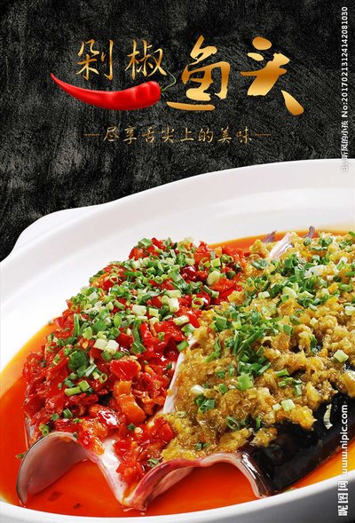
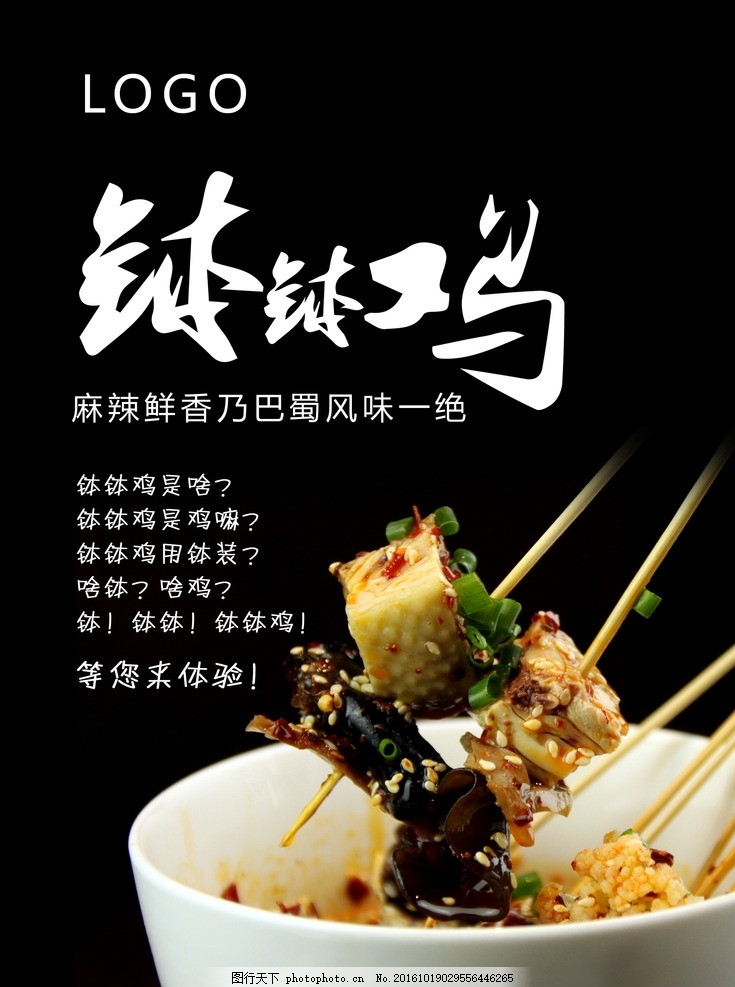
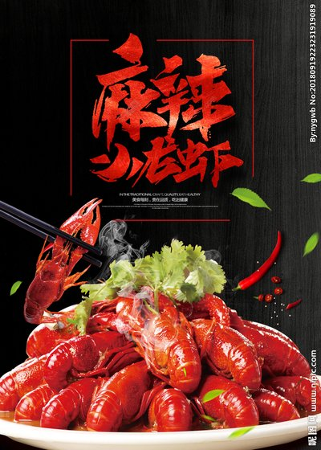
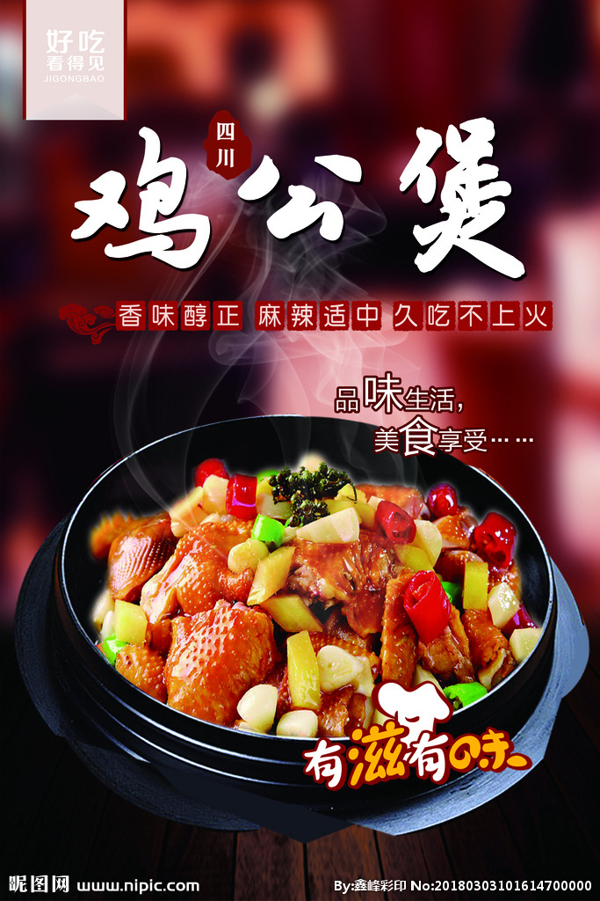
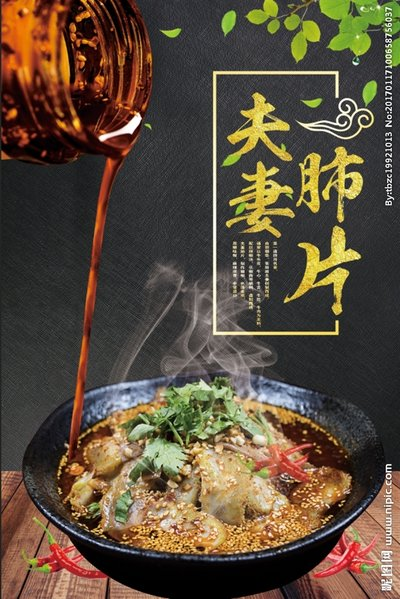
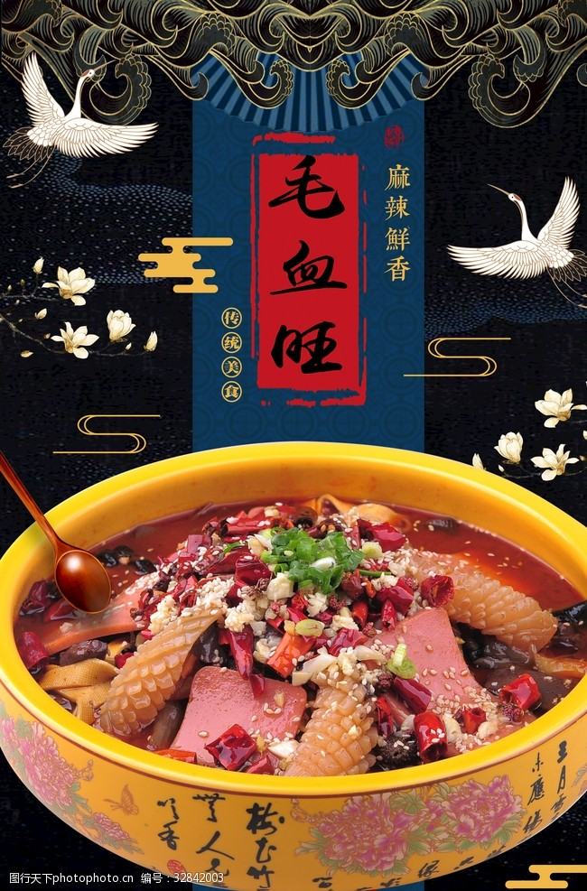

| 剁椒鱼头 | 钵钵鸡 | 麻辣小龙虾 | 鸡公煲 | 夫妻肺片 | 毛血旺 |
|  |  |  |  |  |  |
| 剁椒鱼头 每次摆上一桌菜的时候，怎么能够少得了剁椒鱼头呢？作为川菜特色之一，现如今在各个地方都有着它的声影，口感香辣，可口又下饭哦！这道菜秉持了当地的无辣不欢的特色，鱼头本身就带有鲜香口味，多道工序的加工，使得肉质更加的香嫩，其实最重要的还是剁椒的制作上，但也不算太难，注意食材的量就可以了，不过就怕制作的时候，辣感十足很呛鼻子的哦！为了美食的吃货们，快来小编这瞧瞧做法，露上一手！ |
钵钵鸡 钵钵鸡是一种四川传统名小吃，属于川菜系。从清代流传至今已有上百年的历史。是以陶器钵盛放配以麻辣为主的佐料，加上多种调料的去骨鸡片拌和而成。有皮脆肉嫩，麻辣鲜香，甜咸适中的特色。吃奶汤面时配以钵钵鸡，别具风格。 |
麻辣小龙虾 麻辣小龙虾，简称麻小，湖南特色小吃，又叫口味虾、长沙口味虾、香辣小龙虾、十三香小龙虾等。以小龙虾制成，口感麻辣鲜香。麻辣小龙虾，又称口味虾、长沙口味虾、麻辣小龙虾、香辣小龙虾、十三香小龙虾、“麻小”等 |
鸡公煲 鸡公煲是重庆烧鸡公和重庆干锅鸡在外地的杂交变种菜品。以浓香滑嫩，入味彻底，形式新颖见长，口味可根据各地需要可调，分微辣、中辣、重辣各味型。烧鸡公是重庆及四川一带的特色菜，之所以叫烧鸡公而不叫烧公鸡，是因为在重庆话中公鸡被称为鸡公 |
夫妻肺片 夫妻肺片是四川名菜， 通常以牛头皮、牛心、牛舌、牛肚、牛肉为主料，一份好吃的 夫妻肺片，不仅制作精细，色泽美观，质嫩味鲜，麻辣浓香，而且还能适合多数人的口味，是一道非常好吃的美味。 |
毛血旺 毛血旺以鸭血为制作主料，烹饪技巧以煮菜为主，口味属于麻辣味。起源于重庆，流行于重庆和西南地区，是一道著名的传统菜式。这道菜是将生血旺现烫现吃，且毛肚杂碎为主料，遂得名。毛血旺是重庆市的特色菜，也是渝菜江湖菜的鼻祖之一，已经列入国家. |